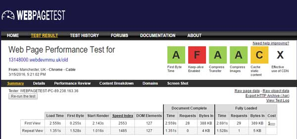

Gulp.js – Project Evaluation
Aim:
To rebuild my portfolio website, with automated workflow for a better website performance.
- Objectives:
- To research on useful Gulp plugins
- To write my own, reusable Gulp file
- Develop the website with automated Gulp tasks
- Measure the performance and compare the results with the old website.
After getting a solid understanding how Gulp works, I had to decide which tasks I’d like to use in Gulp. Lynda.com has recommended a few plugins, but when I tried them, they did not exactly work the same way as it was shown on the video. Thus I had to research and customize my own plugins, as a benefit of that, I gained a deeper understanding on the topic. http://gulpjs.com/plugins/ has more than 2000 Gulp extensions available, it seemed a great plugin library to choose from.
I have chosen the following tasks:
- Gulp Sass: Automatically compiles sass files to css.
- Gulp Autoprefixer: Appends different vendor prefixes to the css.
- BrowserSync: Sets up a local server that automatically refreshes the browser window, whenever a file is saved in the project.
- MinifyCSS: Minifies the CSS.
- Imagemin: Optimizes the image assets (I have observed if I only optimize my images with Photoshop, Google Pagespeed still sends an error message about optimization, with this plugin the error message disappears)
- Prettify: This plugin beautifies the html files, with removing the unnecessary indentation it creates a clean markup.
- Uglify: It does exactly the opposite to Prettify. It minifies the JavaScript assets.
- Concat: This plugin concatenates (merges) the css and js assets into one single file.
On the top of this, I have created 2 different sequences:
Default Gulp sequence: Consists a few development tasks that helps me when I build a website.
Build Sequence: Consists the tasks that are required when the development finishes ( such as concatenating and file optimization)
When I have finished with the configuration of my Gulp file, it looked like this:
var gulp = require('gulp');
var sass = require('gulp-sass');
var autoprefixer = require('gulp-autoprefixer');
var browserSync = require('browser-sync');
var minifyCSS = require('gulp-minify-css');
var imagemin = require('gulp-imagemin');
var cache = require('gulp-cache');
var runSequence = require('run-sequence');
var prettify = require('gulp-html-prettify');
var uglify = require('gulp-uglify');
var concat = require('gulp-concat');
// Development Tasks
// -----------------
// Start browserSync server
gulp.task('browserSync', function() {
browserSync({
server: {
baseDir: 'app'
}
})
})
gulp.task('sass', function() {
return gulp.src('app/sass/**/*.scss') // Gets all files ending with .scss in app/sass and children dirs
.pipe(sass()) // Passes it through a gulp-sass
.pipe(gulp.dest('app/css')) // Outputs it in the css folder
.pipe(browserSync.reload({ // Reloading with Browser Sync
stream: true
}));
})
// Watchers
gulp.task('watch', function() {
gulp.watch('app/sass/**/*.scss', ['sass']);
gulp.watch('app/*.html', browserSync.reload);
gulp.watch('app/js/**/*.js', browserSync.reload);
})
// Optimization Tasks
// ------------------
// optimising JavaScript files
// Minify+Autoprefix+Concat CSS
gulp.task('css', function(){
gulp.src('app/css/*.css')
.pipe(minifyCSS())
.pipe(autoprefixer('last 2 version', 'safari 5', 'ie 8', 'ie 9'))
.pipe(concat('style.min.css'))
.pipe(gulp.dest('dist/css'))
});
gulp.task('js', function(){
gulp.src('app/js/*.js')
.pipe(uglify())
.pipe(concat('app.min.js'))
.pipe(gulp.dest('dist/js'))
});
// Optimizing Images
gulp.task('images', function() {
return gulp.src('app/img/**/*.+(png|jpg|jpeg|gif|svg)')
// Caching images that ran through imagemin
.pipe(cache(imagemin({
interlaced: true,
})))
.pipe(gulp.dest('dist/img'))
});
// Copying fonts
gulp.task('fonts', function() {
return gulp.src('app/fonts/**/*')
.pipe(gulp.dest('dist/fonts'))
})
// Prettifying HTML
gulp.task('templates', function() {
gulp.src('app/*.html')
.pipe(prettify({indent_char: ' ', indent_size: 2}))
.pipe(gulp.dest('dist/'))
});
// Build Sequences
// ---------------
gulp.task('default', function(callback) {
runSequence(['sass', 'browserSync', 'watch'],
callback
)
})
gulp.task('build', function(callback) {
runSequence(
['css', 'js' , 'images', 'fonts', 'templates'],
callback
)
})
As it is visible from my source file, Gulp is working with 2 different directories:
‘App’ folder with original, development files, and there is a ‘Dist’ folder with optimized assets. It makes easier to manage the project and what to upload on our server.
When I was ready with the development stage and the website was live, I have conducted a performance comparison between my old site and new site. Firstly I have used Google PageSpeed Insights. The overall mobile performance score has increased from 67 to 75. This increase was due to the image optimization and css/js minification. See the image below.
The second test was on http://www.webpagetest.org/ (The website was recommended by speakers on UpFrontConf 2015). It has provided far more detailed results. Therefore I could figure out I cut off almost 1 second from the loading time of my website from 2.5s to 1.6s and I reduced the http requests from 28 to 21. See the images below.
To sum it up it worth to use this powerful tool, not just because it is an industry standard at web development agencies, but the amount of time it saves and the optimized output is incredibly efficient in terms of performance.
If you want to know more about this topic, I recommend to read this article on Smashing Mag.
If you want to see my original dev files, check out my GitHub repository https://github.com/pkrisz89/new-portfolio